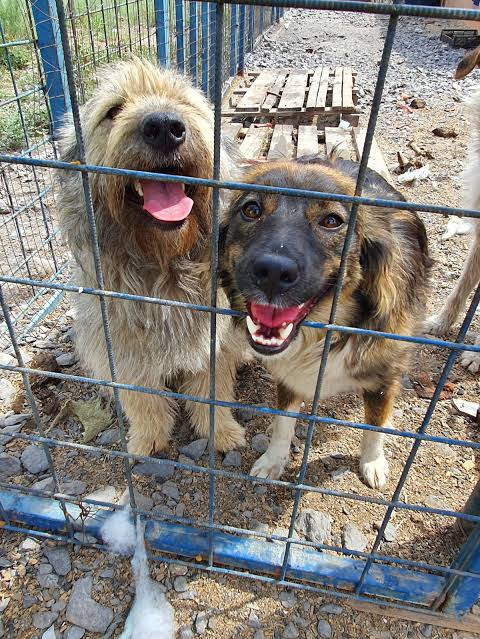

Care and Protection
Animals arriving at the shelter can receive care, food and medical assistance when needed.
A shelter for homeless animals in Astana, Kazakhstan.
I Am Alive is an animal shelter in Astana, Kazakhstan. The shelter helps homeless animals and provides them with care, food, safety and an opportunity to find a home.
The shelter is located in the Koktal area of Astana at Akkorgan Street 5V.
Animals arriving at the shelter can receive care, food and medical assistance when needed.
The shelter gives visitors an opportunity to meet animals and consider responsible adoption.
Volunteers can help with activities such as walking dogs and supporting the everyday needs of the shelter.



| Information | Details |
|---|---|
| Name | I Am Alive / Я живой |
| City | Astana, Kazakhstan |
| Address | Akkorgan Street 5V |
| Telephone | +7 (702) 481-01-58 |
| Opening hours | Daily, 11:00–18:00 |
According to published information about the shelter, different kinds of support can be useful.
Responsible animal care means providing food, safety and appropriate veterinary care.
The term AW can describe the general well-being of animals.
A responsible adoption decision should consider the animal's needs, available space and long-term care.
Animals need water every day: H2O is essential for life.
A healthy animal may need regular veterinary checks; for example, a vaccination record can contain a date such as 20261.
Animal welfare and responsible ownership are important parts of caring for a pet.
Information on this page should be checked with the shelter before making a visit because contact details and schedules can change.
A published story about the shelter describes a dog named Jack, who arrived at I Am Alive in 2020 after being found in very poor condition.
"Все преодолимо. Мы же люди. Мы и больше сделать можем, стоит только захотеть."
— adopter quoted in a 2023 story about Jack
The story illustrates the importance of care and the possibility of animals finding a permanent home.
The shelter is often described simply as
a place where animals can find safety and a home
.
The page uses HTML elements such as
<section> and <article>
to organize information.
<section>
<h2>About the Shelter</h2>
<p>Information about the shelter.</p>
</section>
To open the browser's developer tools, a user can press F12.
A successful command may produce output similar to: HTML document loaded.
The shelter project uses basic HTML & semantic structure. The page does not use CSS < or > JavaScript.
Useful entities include: © & < >